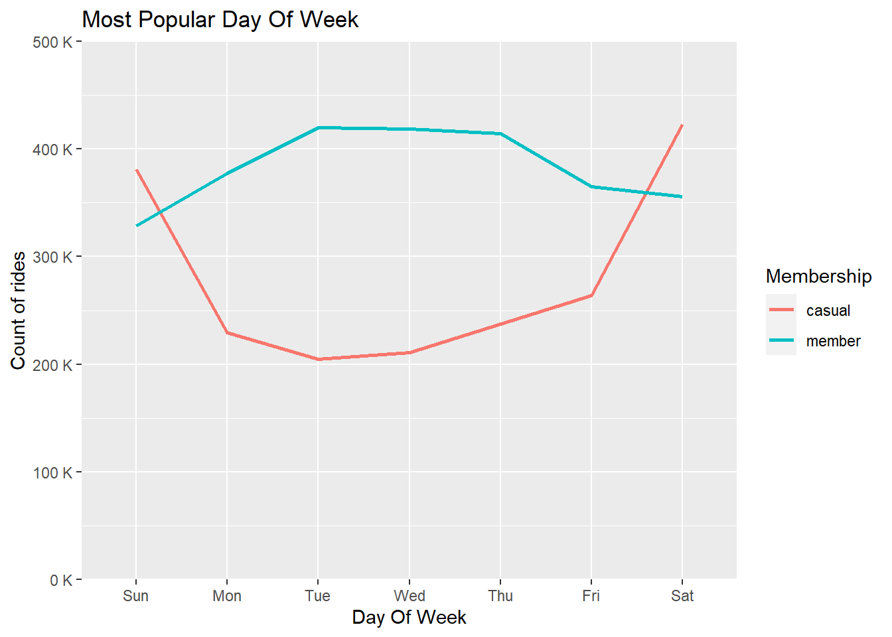

library(tidyverse)
library(data.table)
library(ggplot2)
library(scales)trips_cleaned <- read_csv("C:/Users/jains/Downloads/Cyclistic Project/Trip_Data_082021-072022/Cyclistic_Combined_Data.csv")
2.1 Average Trip Time Vs Membership Type
We can check and compare the average trip time for both membership types.
trips_cleaned %>%
group_by(member_casual) %>%
summarize(trip_time_by_membership = mean(trip_time))## # A tibble: 2 × 2
## member_casual trip_time_by_membership
## <chr> <dbl>
## 1 casual 1597.
## 2 member 756.This shows that casual riders tend to spend more time on rides in comparison to subscribers. Let’s check some more factors to analyze the same.
2.2 Average Trip Time Vs Day of Week
trips_cleaned %>%
group_by(day_of_week) %>%
summarize(trip_time_by_day = mean(trip_time))## # A tibble: 7 × 2
## day_of_week trip_time_by_day
## <chr> <dbl>
## 1 Fri 1047.
## 2 Mon 1083.
## 3 Sat 1336.
## 4 Sun 1385.
## 5 Thu 972.
## 6 Tue 930.
## 7 Wed 933.We could see from the data that trip time is usually longer on
weekends in comparison to other days. We will further classify this data
on the basis of rider type.
2.3 Average Trip Time Vs Membership and Day of Week
trips_cleaned %>%
group_by(member_casual,day_of_week) %>%
summarize(trip_time_by_day = mean(trip_time))## `summarise()` has grouped output by 'member_casual'. You can override using the
## `.groups` argument.## # A tibble: 14 × 3
## # Groups: member_casual [2]
## member_casual day_of_week trip_time_by_day
## <chr> <chr> <dbl>
## 1 casual Fri 1480.
## 2 casual Mon 1660.
## 3 casual Sat 1742.
## 4 casual Sun 1838.
## 5 casual Thu 1405.
## 6 casual Tue 1392.
## 7 casual Wed 1368.
## 8 member Fri 735.
## 9 member Mon 733.
## 10 member Sat 853.
## 11 member Sun 861.
## 12 member Thu 724.
## 13 member Tue 705.
## 14 member Wed 713.We have already seen from section 2.1 and 2.2 that rides on weekends
are usually longer and from the above data this is more clear that trip
time is longer in weekends for both casual as well as members. But
casual riders ride time is comparatively more than members.
2.4 Count of Rides Vs Day of week
trips_cleaned %>%
group_by(day_of_week) %>%
tally()## # A tibble: 7 × 2
## day_of_week n
## <chr> <int>
## 1 Fri 628850
## 2 Mon 606785
## 3 Sat 778179
## 4 Sun 709158
## 5 Thu 652013
## 6 Tue 624532
## 7 Wed 629440The count of rides being more on weekends could be a factor for more
trip time.
2.5 Average Ride Length & Count of Rides Vs Membership & Day of Week
trips_cleaned %>%
group_by(member_casual, day_of_week) %>%
summarize(total_trips_by_day = n(), mean_rides = mean(trip_time)) %>%
arrange(member_casual, day_of_week)## `summarise()` has grouped output by 'member_casual'. You can override using the
## `.groups` argument.## # A tibble: 14 × 4
## # Groups: member_casual [2]
## member_casual day_of_week total_trips_by_day mean_rides
## <chr> <chr> <int> <dbl>
## 1 casual Fri 263739 1480.
## 2 casual Mon 229306 1660.
## 3 casual Sat 422687 1742.
## 4 casual Sun 380692 1838.
## 5 casual Thu 237575 1405.
## 6 casual Tue 204564 1392.
## 7 casual Wed 210690 1368.
## 8 member Fri 365111 735.
## 9 member Mon 377479 733.
## 10 member Sat 355492 853.
## 11 member Sun 328466 861.
## 12 member Thu 414438 724.
## 13 member Tue 419968 705.
## 14 member Wed 418750 713.As we can see that in the case of casual riders, the total trips are more on weekends hence the trip time is more on the same days. But in the case of members that is not the case. The count of rides are almost equal in weekends and weekdays. Hence this could not give a clear picture about the trip time. Let’s explore further.
Let’s check for the mean, median, min. and max. value of trip time.
summary(trips_cleaned$trip_time)## Min. 1st Qu. Median Mean 3rd Qu. Max.
## 1 384 673 1110 1211 2497750This shows us that there is huge difference between mean trip time and max trip time. So, we can say that there are some of the rides which were greater than 1 day or 86400 secs.
#Creating a dataframe for trips which are greater than 1 day
greater_than_1_day <- trips_cleaned %>%
filter(trip_time>=86400) %>%
mutate(cont_days=trip_time/86400) %>%
arrange(-cont_days)
#Creating a dataframe for trips which are less than 1 day
less_than_1_day <- trips_cleaned %>%
filter(trip_time<86400 & trip_time>300) %>%
mutate(trip_mins=trip_time/60) %>%
group_by(member_casual,trip_mins) %>%
summarize(count=n()) %>%
arrange(-trip_mins) ## `summarise()` has grouped output by 'member_casual'. You can override using the
## `.groups` argument.We will now visualize the data for further analysis.
We can calculate and visualize the total no of rides for each membership category
#No. of trips made by rider type
pie <- trips_cleaned %>%
group_by(member_casual) %>%
summarise(count=n(),Percentage=n()/nrow(.)) %>%
ggplot(aes(x="", y=count, fill=member_casual))+
geom_bar(width = 1, stat = "identity")+
coord_polar("y", start=0) +
guides(fill = guide_legend(title = "Membership")) +
labs(title="% of Total Rides by Each Category")
#Create a blank theme
blank_theme <- theme_minimal()+
theme(
axis.title.x = element_blank(),
axis.title.y = element_blank(),
panel.border = element_blank(),
panel.grid=element_blank(),
axis.ticks = element_blank(),
plot.title=element_text(size=14, face="bold")
)
#Using pie chart to show the count
pie + scale_fill_brewer("Blues") + blank_theme +
theme(axis.text.x=element_blank())+
geom_text(aes(y = count/2 + c(0, cumsum(count)[-length(count)]),
label = percent(1-Percentage)), size=5) So, the data we are using consists of 58% of the rides which are done by members and 42% of the rides which are done by casual riders.
We can check for the count of rides on a monthly basis for each of the membership category.
#Total Rides Vs Month
trips_cleaned %>%
group_by(month_name,member_casual) %>%
tally() %>%
ggplot(aes(x=month_name, y=n, group=member_casual, color=member_casual)) + geom_line(size=1) +
scale_x_discrete(limits = month.abb) +
scale_y_continuous(expand = c(0, 0), limits=c(0,400000),labels = label_number(suffix = " K", scale = 1e-3)) +
labs(x="Month",y="Count of Rides", title="Most Popular Time Of Year") +
guides(color = guide_legend(title = "Membership"))From the graph we could see that there is a sudden increase in the no. of rides between May to October for casual as well as member riders. This might be due to the weather and climate conditions. We could infer that customers use Cyclistic bikes more often in the summer season than in the winter season.
We will check for the most busy time of the day i.e. the time at which the count of rides is maximum. We will calculate this in Hrs.
#Creating a separate dataframe for most busy time of Day
busy_time <- trips_cleaned %>%
mutate(Hour=as.character(format(started_at, "%H"))) %>%
group_by(Hour,member_casual) %>%
count(Hour)
busy_time %>%
ggplot(aes(x=Hour,y=n,group=member_casual, color=member_casual)) +
geom_line(size=1) +
labs(x="Hour of Day",y="Count of rides", title="Most Popular Time Of Day") +
scale_y_continuous(expand = c(0, 0), limits=c(0,300000),labels = label_number(suffix = " K", scale = 1e-3)) +
guides(color = guide_legend(title = "Membership"))It can be observed that the time around 5 PM is the most busy time of
the day. In the case of members the graph becomes steep at around 8 AM
and 5 PM. By this we can assume that these people are using CYclistic
bikes for going to work and coming back.
In the case of casual riders the steep is observed only at 5PM, this
could be due two both the reasons. Either they are using it for coming
back from work or they might use it for leisure.
Let’s calculate the total no. of trips per day in a week.
#No of rides per day of a week
##Creating a dataframe for rides per day of week
rides_day_week <- trips_cleaned %>%
group_by(member_casual, day_of_week) %>%
summarize(total_trips_by_day = n(), mean_rides = mean(trip_time)) %>%
arrange(member_casual, day_of_week)## `summarise()` has grouped output by 'member_casual'. You can override using the
## `.groups` argument.##Arranging the rides in order of days
rides_day_week$day_of_week <- factor(rides_day_week$day_of_week, levels = c("Sun", "Mon", "Tue", "Wed", "Thu", "Fri", "Sat"))
##Plotting a line chart to visualize
rides_day_week %>%
ggplot(aes(x = day_of_week, y = total_trips_by_day, group = member_casual, color=member_casual)) +
geom_line(size=1) +
scale_y_continuous(expand = c(0, 0), limits=c(0,500000),labels = label_number(suffix = " K", scale = 1e-3)) +
labs(x="Day Of Week",y="Count of rides", title="Count Of Rides Vs Day Of Week") +
guides(color = guide_legend(title = "Membership"))
From above, we can conclude that more no. of rides are being done by
members in weekdays as compared to casual riders.
Whereas more no. of rides are done by casual riders in weekends than
members.
trips_cleaned %>%
group_by(rideable_type, member_casual) %>%
summarize(count_ride_type = n(),Perc_of_total_rides=(n()/nrow(.))*100) %>%
ggplot(aes(x=member_casual, y=Perc_of_total_rides , fill=member_casual)) +
geom_col(position="dodge", show.legend = FALSE) +
facet_wrap(~ rideable_type) +
scale_y_continuous(labels=function(x) paste0(x,"%")) +
labs(x="Membership",y="% of Total Rides",title="% Of Total Rides For Each Ride Type & Membership ") ## `summarise()` has grouped output by 'rideable_type'. You can override using the
## `.groups` argument.This shows us that members usually prefer classic bikes whereas casual riders don’t have a fixed preference.
trips_cleaned %>%
group_by(member_casual, day_of_week) %>%
summarize(total_trips_by_day = n(), average_ride_length = mean(trip_time)) %>%
arrange(member_casual, day_of_week) %>%
ggplot(aes(x = day_of_week, y = average_ride_length, fill = member_casual)) +
geom_col(position = "dodge") +
labs(x="Day of Week",y="Average Trip Time", title="Average Ride Length Vs Day of Week") +
guides(fill = guide_legend(title = "Membership"))## `summarise()` has grouped output by 'member_casual'. You can override using the
## `.groups` argument.
We can check the relationship between percentage of total rides with respect to rider type, day of week and membership criteria. Let’s check this.
trips_cleaned %>%
group_by(rideable_type,member_casual,day_of_week) %>%
summarize(total_trips=n(),Percentage_total=(n()/nrow(.))*100) %>%
ggplot(aes(x=member_casual, y=Percentage_total, fill=member_casual)) +
geom_col(position="dodge" , show.legend=FALSE) +
facet_grid(rideable_type ~ day_of_week) +
scale_y_continuous(labels=function(x) paste0(x,"%")) +
theme(axis.text.x=element_text(angle=45)) +
labs(x="Day of week / Membership",y="% of Total Rides / Ride Type") ## `summarise()` has grouped output by 'rideable_type', 'member_casual'. You can
## override using the `.groups` argument.
We will now find out the top 30 stations for casual riders. Using this we can make an inference that which stations were used mainly as the starting point for casual riders.
#We will create a separate dataframe for finding top 30 stations
##Filtering the mambership for casual riders and joining start and end stations
stations <- trips_cleaned %>%
filter(member_casual=='casual') %>%
select(start_station_name,end_station_name) %>%
unite(stations,c(start_station_name,end_station_name),sep="-") %>%
group_by(stations) %>%
summarize(Count=n())
##Ordering the no. of times a station is used in descending order
stations <- stations[order(-stations$Count),]
##Extracting top 30 stations
stations <- stations[1:30,]
##Again splitting joined station names to check for same start and end stations
stations[c('start_station_name', 'end_station_name')] <- str_split_fixed(stations$stations, '-', 2)
stations <- stations %>%
mutate(Same_station=ifelse(start_station_name==end_station_name,'Yes','No'))
We have now created a separate dataframe for all the stations with the no. of times they are being used. We found that some instances were present which had the same start and end station names. We will show them in our visualization.
stations %>%
ggplot(aes(y=reorder(stations, +Count),x=Count, fill=Same_station)) + geom_col() +
labs(x="Total Trips", y="Start Station - End Station", title="Top 30 Stations - Casual Riders") +
guides(fill = guide_legend(title = "Same station"))It can be observed that most of the rides done by casual riders have
the same starting and ending station names. This could be the reason for
longer trip time for casual riders as they tend to keep the bike with
them for a longer time which results in increase of trip time.
After checking the top 30 stations for casual riders, it’s time to check the same for member riders. Let’s follow the same steps to check the same.
#We will create a separate dataframe for finding top 30 stations
##Filtering the mambership for member riders and joining start and end stations
station_names_trips_members <- trips_cleaned %>%
filter(member_casual=='member') %>%
select(start_station_name,end_station_name) %>%
unite(stations,c(start_station_name,end_station_name),sep="-") %>%
group_by(stations) %>%
summarize(Count=n())
##Ordering the no. of times a station is used in descending order
station_names_trips_members <- station_names_trips_members[order(-station_names_trips_members$Count),]
##Extracting top 30 stations
station_names_trips_members <- station_names_trips_members[1:30,]
##Again splitting joined station names to check for same start and end stations
station_names_trips_members[c('start_station_name', 'end_station_name')] <- str_split_fixed(station_names_trips_members$stations, '-', 2)
station_names_trips_members <- station_names_trips_members %>%
mutate(Same_station=ifelse(start_station_name==end_station_name,'Yes','No'))
station_names_trips_members %>%
ggplot(aes(y=reorder(stations, +Count),x=Count, fill=Same_station)) + geom_col() +
labs(x="Total Trips", y="Start Station - End Station", title="Top 30 Stations - Members") +
guides(fill = guide_legend(title = "Same station"))In case of members the case is different as there are very few instances where starting and ending station names are the same. Hence, this can be concluded that members usually use Cyclistc bikes to commute to work.
Previously in section 3, we checked that there were some rides that
were greater than 24 hours or 1 day. We will now visualize to check
which rider type uses the Cyclistic bikes for more than 1 day.
The dataframe created earlier for this was greater_than_1_day.
#Scatterplot showing no. of rides greater than 1 day
greater_than_1_day %>%
ggplot(aes(x = 1:nrow(greater_than_1_day), y = cont_days)) +
geom_point(color="green") +
facet_wrap(~ member_casual) +
labs(title="No. of rides greater than 1 Day", x="No. of rides", y="No. of Days")From the above chart we can see that there are many instances in case of casual riders where the trip time is greater than 1 day with the highest trip being for almost 28-30 days while the maximum trip time in the case of members was around 1-2 days.
In the similar way, let’s visualize the no. of rides less than 1 day.
We will use trip time in mins to show this. The dataframe created
earlier for this purpose was less_than_1_day.
Please note that we are only considering the rides greater than 5
mins.
#Scatterplot showing count of rides less than 1 day
less_than_1_day %>%
ggplot(aes(x = count, y = trip_mins)) +
geom_point(color="green") +
facet_wrap(~member_casual) +
labs(title="No. of rides less than 1 Day", x="Count of rides", y="Trip Time(mins")There were many rides for the members which were less than 10 mins.
This might be because of the membership as they are using Cyclistic for
small distances too. While in the case of casual riders small rides are
less.